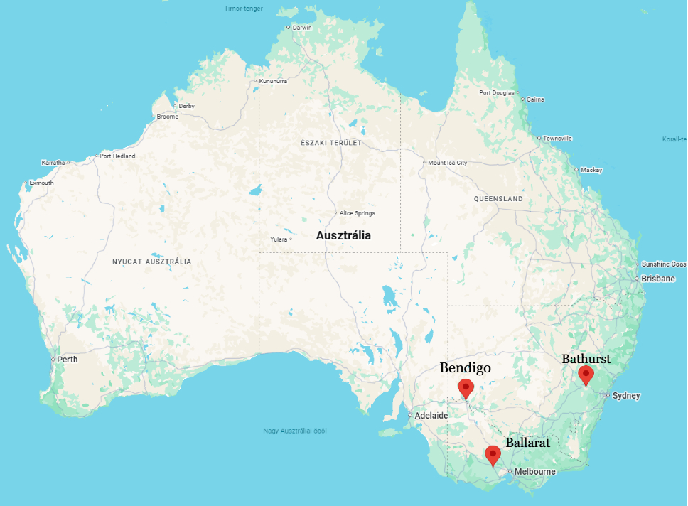
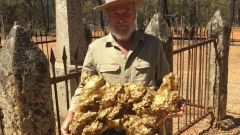

Amikor emberek tízezrei költöztek a semmi közepére egy csillogó fém miatt.
Vissza a főoldalraAz ausztrál aranyláz az 1850-es években kezdődött, amikor nagy mennyiségű aranyat találtak Victoria és Új-Dél-Wales területén. Emberek érkeztek a világ minden részéről, remélve, hogy meggazdagodnak. A legtöbben nem gazdagodtak meg. Meglepő fordulat.
A legismertebb helyek közé tartozott:

Az aranyláz hatalmas gazdasági növekedést hozott Ausztráliának. A népesség gyorsan nőtt, új városok épültek, és az ország fejlődése felgyorsult.
Az emberek szó szerint a földet túrták pénzért. Néha működött.
A valaha talált egyik legnagyobb aranyrög, a Welcome Stranger, 1869-ben került elő Victoria államban.
